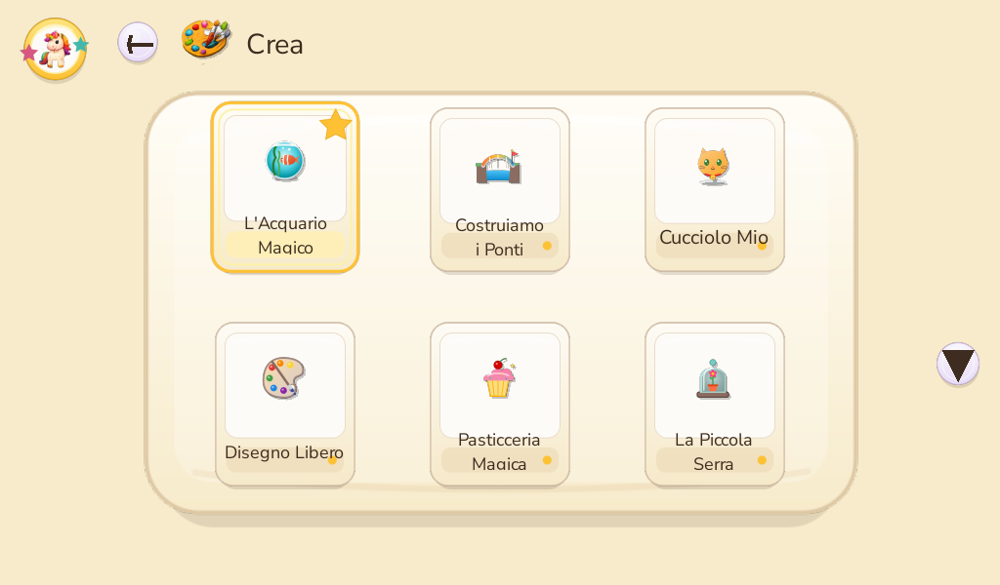
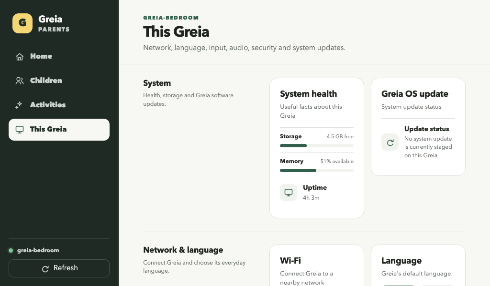
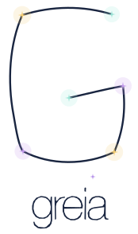

✳ CHILD-FIRST COMPUTING / PARENT-SHAPED
A little
computer.
A bigger
world.
Greia turns a computer into a place for a child to make, discover and grow. Parents shape the experience. Old hardware gets a new purpose.

01 / WHY GREIA EXISTS
Good ideas
deserve a
second life.
The first-generation Acer Aspire One is Greia's toughest reference point. Raspberry Pi 400 and 500 are equal design targets. The mission is one welcoming child experience across computers with very different ages and resources.
Hardware and release acceptance are still underway. This is the design mission, not a claim that every device is release-ready.

The original little Acer keeps Greia honest about memory, storage and screen space.
02 / THE IDEA UNDER THE SURFACE
Play on top.
Purpose
underneath.
Greia is the child's graphical world, not a desktop with distractions hidden away. Every Activity uses the same trusted foundations, so a new game, story or creative tool feels at home.
A world of Activities.
One familiar way to choose, play, create and go Home. Greia's own navigation stays available above every Activity.

CAPTURE ✳
03 / GREIA PARENTS
Their world.
Your say.
A separate Parent app keeps the grown-up decisions out of the child's way. Give each child a profile, choose which Activities appear, set a comfortable challenge level and manage the device from a browser.
Profiles keep creations and progress personal. Parents can tune discovery and visibility for each child.
The screenshot is a development capture. Parent installation is capability-gated while the release transport and package lifecycle are completed.
04 / MAKE IT PERSONAL
What if an
Activity were
about them?
A child obsessed with trains. A family garden. Their own story characters. Greia's Activity model is built for experiences that can be shaped around a real child, then checked and installed with parent authority.
Today: contributor guides, validation, Simulator and a controlled install path. A guided family Creation Pack and ordinary-release installation are still in development.

Our little garden
Plant, notice, return tomorrow. A familiar place becomes a curious little world.
05 / VOICES WITH CHARACTER
A voice can
make a world
feel known.
Greia's character voices are made and reviewed before an Activity ships. The child's computer plays lightweight recordings; it does not need to run a speech model while they play.
“Hi! I'm Lilli! I love making up stories, drawing colorful things, and finding a little magic everywhere.”
These clips are accepted authoring assets. Their placement throughout the live child experience is still being integrated.
06 / THE WORLD WE ARE BUILDING
More wonder.
Less waste.
More theirs.
Offline-first. Profile-owned creations. Parent-shaped choices. A platform built to welcome older computers and new ideas alike.
Greia is in pre-public development. Website exploration, September 2026.